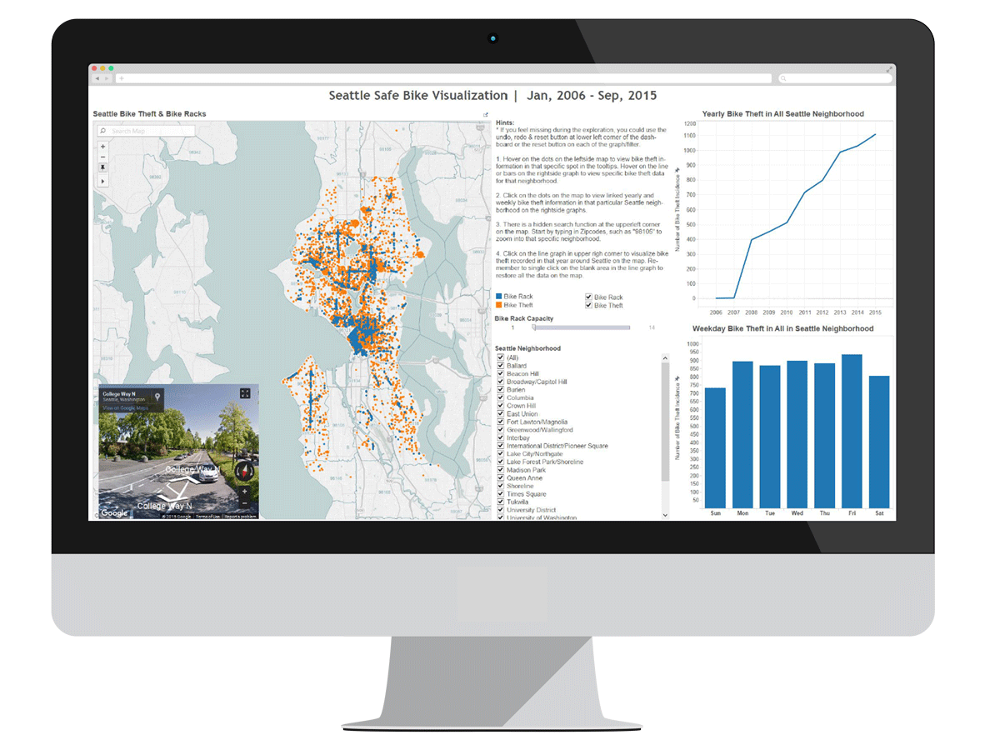
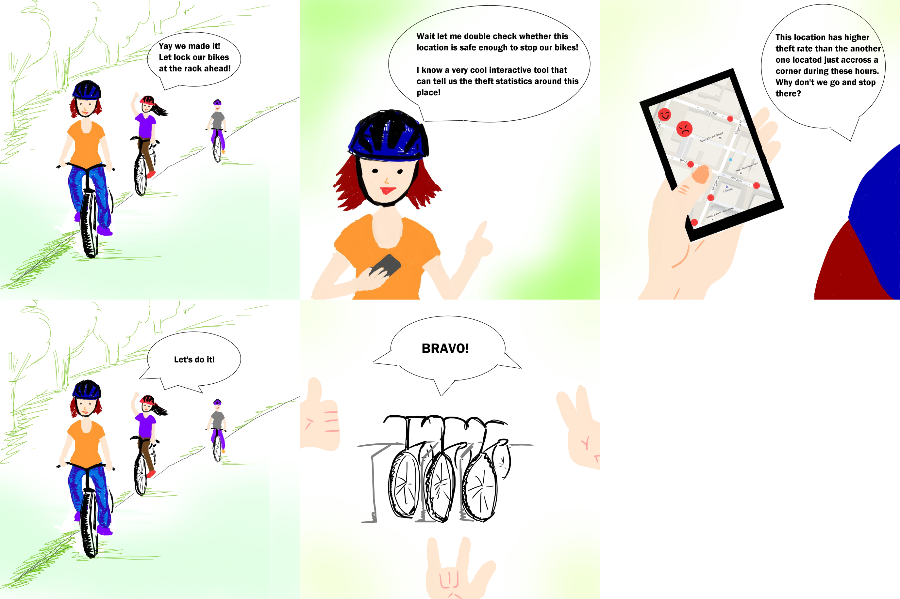
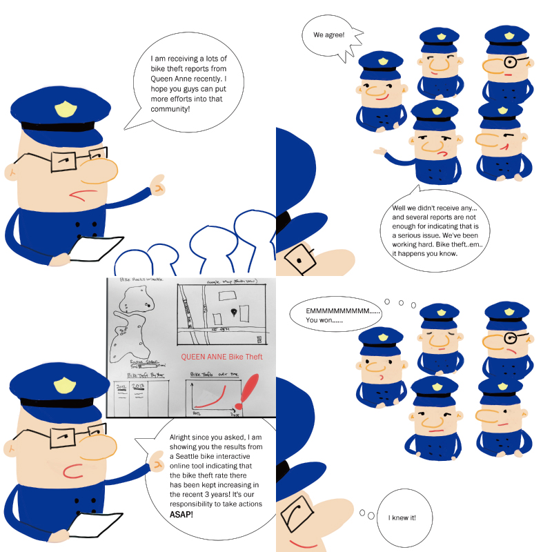
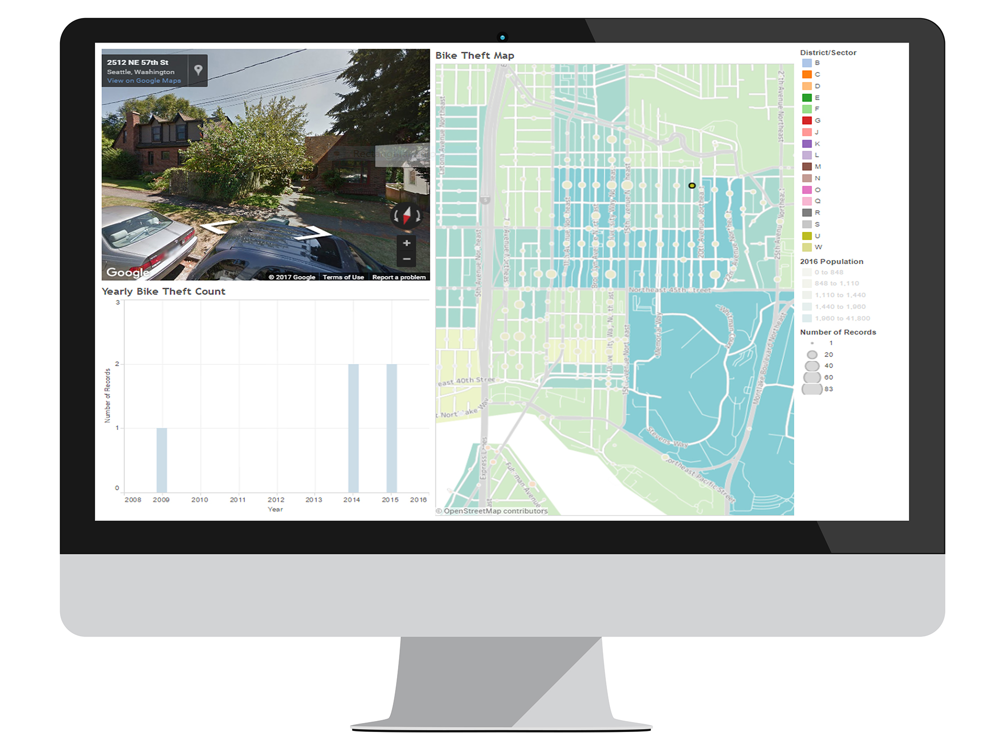
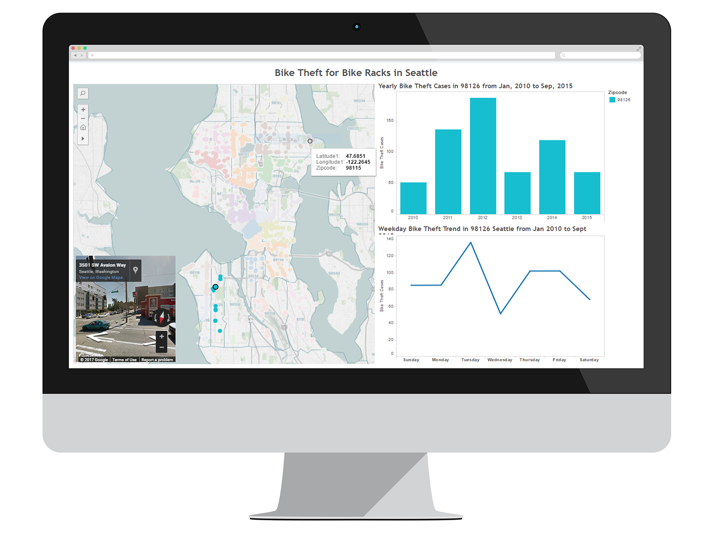
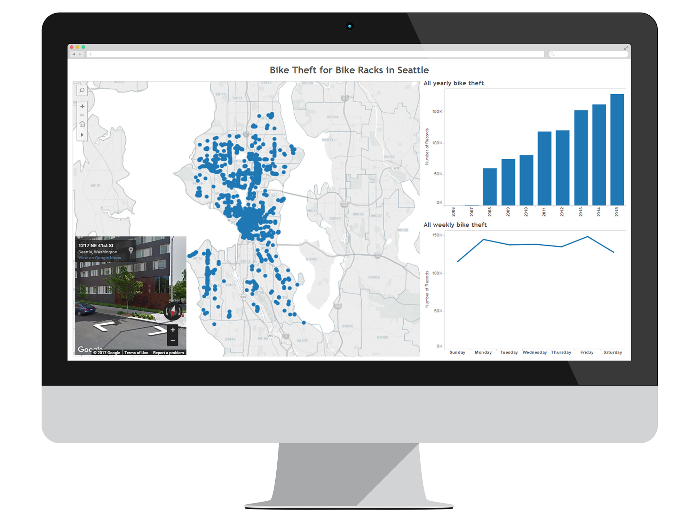
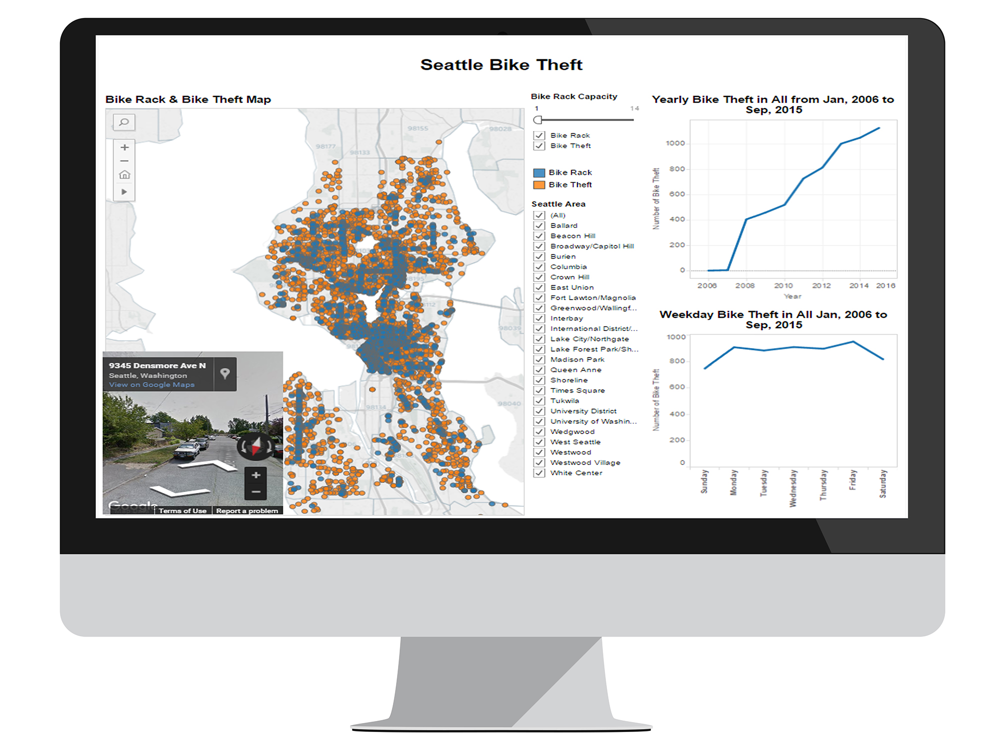
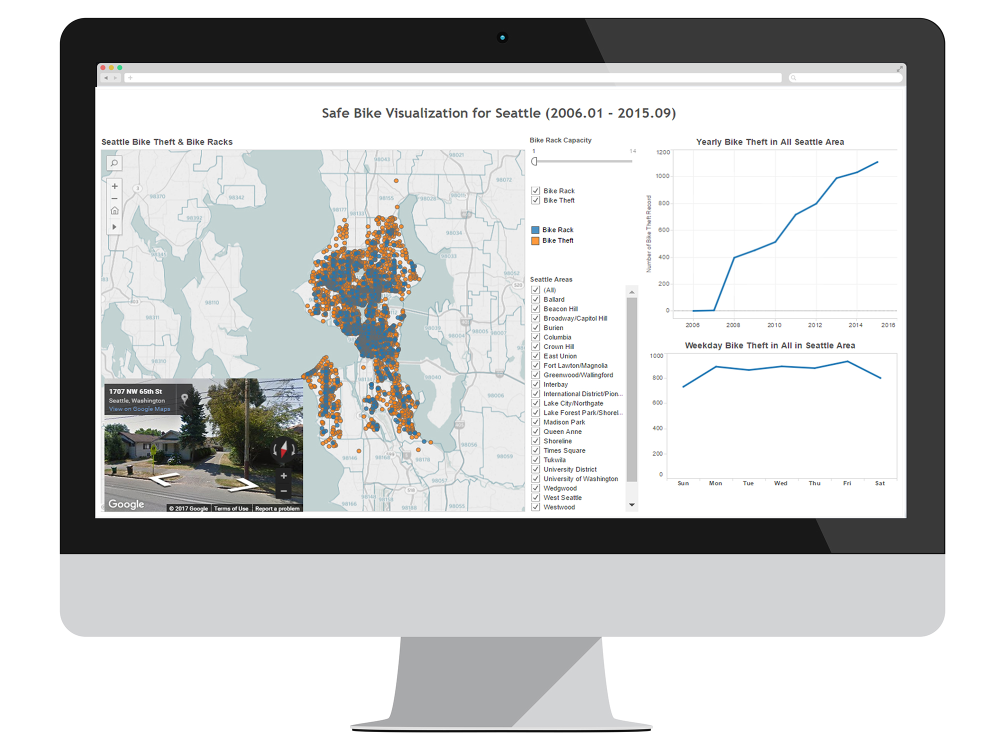

Seattle Safe Bike
Interactive Data Visualization Dashboard • UX
My Role
UX Designer | 09 - 12. 2015
Tools
Tableau Desktop, Tableau Public, Adobe Photoshop
What I Did
Tableau software lead, UX designer, Usability testing
Team
John Castro, Fang-Ju Chou, Madeleine Stewart, Xiaochen Yu
Seattle Bikers: "Where can we park our bicycles near Green Lake to safely keep them safely?"
Seattle Bikes are Facing Theft Challenge
Seattle was rated the second safest big US city for walking and biking by Alliance for Biking & Walking according to a Seattle Times report, and there are a large population of bicyclists in Seattle. From Jan. 2015 to Sep. 2015 only, there were 1,109 bike thefts according to our police report dataset, indicated a rate of 4 bike thefts per day.
Design Solution
Our mission for this project was to assist bicyclists in the Great Seattle area with their safety awareness of parking their bikes. We created a data visualization in Tableau to effectively communicate the bike theft trend in the recent decade, helping the bicyclists to make decisions for parking the bikes.
Seattle Safe Bike | Final Interactive Data Viz Dashboard
Dataset | data.seattle.gov: City of Seattle open data
Primary Persona | Casey, a 23-Year-Old Cyclist in Seattle
Casey is a UW student who loves biking bikes 4-6 times a week. She worries about her bike being stolen, especially in unfamiliar areas, and uses 2 bike locks. Secondary Persona | Parker, a Police Officer in Seattle
Parker is a Seattle police officer working for 10 years. He worries about the increasing bike theft in certain communities and wants to have a tool to glance over the overall trend of bike theft incidents in those communities before moving forward. Initial Sketch

Dashboard Prototyping | Phase I
Milestone
Plotting the bike theft data in Tableau Dashboard based of initial sketch.
Usability Feedback
The dots in various sizes on the map representing bike theft incidence numbers are informative.
The population data might not be useful.
The district information and encoding colors is not informative.
Dashboard Prototyping | Phase II
Milestone
Get zipcode information from Reverse Geocoding.
Plot bike racks on the map instead of bike theft.
Improved the Layout of the dashboard: street view map mimics Google map.
Usability Feedback
The colors in the stack bars and map were confusing and did not adding useful information.
The stacked bar chart makes it hard to see the bike theft trend.
Didn’t get what are the corresponding areas of those zipcodes.
Dashboard Prototyping | Phase III
Milestone
Linked zipcodes with corresponding neighborhood names, data from USPS, and showed via details-on-demand.
Erased color encoding for neighborhoods.
Dashboard Prototyping | Phase IV
Milestone
Bar to line chart
Manually merged the two datasets into a single one and plotted both bike rack and bike theft locations on the map.
Refined the dashboard by adding details.
Usability Feedback
The colors in the stack bars and map were confusing and did not adding useful information.
The stacked bar chart makes it hard to see the bike theft trend.
Didn’t get what are the corresponding areas of those zipcodes.
Dashboard Prototyping | Phase V
Milestone
Fixed the y-axis of the right side graphs for more precise data.
Usability Feedback
The lines seemed to be flat; harder to tell the peaks.
Seattle Safe Bike | Final Interactive Data Viz Dashboard
Milestone
Went back to map encoding in our first prototype, encoded bike theft incidence number in each specific location by dot sizes.
Replaced the line chart for weekday bike theft statistics with bar chart.
Instructions for guiding users through the hidden tricks in visualization.